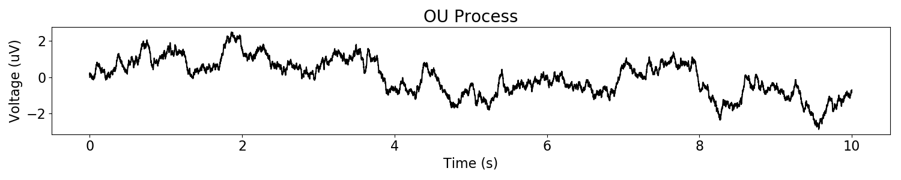

Note
Click here to download the full example code
Simulating Signals¶
Simulate periodic (oscillatory) and aperiodic (1/f-like) signals.
This tutorial primarily covers neurodsp.sim.
import numpy as np
from neurodsp import spectral, sim
from neurodsp.plts.spectral import plot_power_spectra
from neurodsp.plts.time_series import plot_time_series
# Set the random seed, for consistency simulating data
np.random.seed(0)
Simulate brown noise¶
Often, we want to simulate noise that is comparable to what we see in neural recordings.
Brown noise is a good proxy for that because, like neural signals, power decreases roughly linearly with frequency.
# Simulate brown noise
n_seconds = 10
fs = 1000
exponent = -2
times = np.arange(0, n_seconds, 1/fs)
br_noise = sim.sim_powerlaw(n_seconds, fs, exponent)
# Plot the simulated data, in the time domain
plot_time_series(times, br_noise)
# Plot the simulated data, in the frequency domain
freqs, psd = spectral.compute_spectrum(br_noise, fs)
plot_power_spectra(freqs, psd)
Simulate filtered brown noise¶
However, brown noise has a lot of power in very slow frequnecies, whereas these slow frequencies are often not present or filtered out in neural signals. Therefore, we may desire our brown noise to be high-pass filtered. See that the resulting signal has much less low-frequency drift.
Note this might not be ideal because it creates an “oscillation” at the cutoff frequency.
# Simulate highpass-filtered brown noise with a 1Hz cutoff frequency
f_hipass_brown = 1
brown_filt = sim.sim_powerlaw(n_seconds, fs, exponent, f_range=(f_hipass_brown, None))
Out:
Transition bandwidth is 1.0 Hz.
Pass/stop bandwidth is 499.0 Hz.
# Plot the simulated data, in the time domain
plot_time_series(times, brown_filt)
# Plot the simulated data, in the frequency domain
freqs, psd = spectral.compute_spectrum(brown_filt, fs)
plot_power_spectra(freqs, psd)
Note: the sim_variable_powerlaw() and sim_filtered_noise() functions can
support arbitrary power law exponents, such as pink noise (-1).
Other 1/f-like noises¶
We can also simulate an Ornstein-Uhlenbeck process (random walk with memory), as well as ‘synaptic (Lorentzian) noise’, which is white noise convolved with an exponentially-decaying kernel mimicking the shape of a post-synaptic potential.
Both of these noise models produce 1/f scaling in higher frequencies with a fixed exponent of -2. For more details on their usage in simulating neural signals, please see Destexhe et al., 2001 and Gao et al., 2017.
# Simulate aperiodic signals from OU process & synaptic noise model
ou_noise = sim.sim_random_walk(n_seconds, fs)
syn_noise = sim.sim_synaptic_current(n_seconds, fs)
# Plot the simulated data, in the time domain
plot_time_series(times, ou_noise, title='OU Process')
plot_time_series(times, syn_noise, title='Synaptic Noise')
- 

# Plot the simulated data, in the frequency domain
freqs, ou_psd = spectral.compute_spectrum(ou_noise, fs)
freqs, syn_psd = spectral.compute_spectrum(syn_noise, fs)
plot_power_spectra(freqs, [ou_psd, syn_psd], ['OU', 'Synaptic'])
Simulate a stationary oscillator¶
In addition to noise, you may also want to simulate an oscillatory process. We can do that with neurodsp, with arbitrary rise-decay symmetry.
# Simulate symmetric oscillator
n_seconds = 1
fs = 1000
osc_freq = 6.6
osc_a = sim.sim_oscillation(n_seconds, fs, osc_freq, cycle='asine', rdsym=.5)
osc_b = sim.sim_oscillation(n_seconds, fs, osc_freq, cycle='asine', rdsym=.2)
# HACK: REMOVE WHEN SIM UPDATED
osc_a = osc_a[0:n_seconds*fs]
osc_b = osc_b[0:n_seconds*fs]
times = np.arange(0, n_seconds, 1/fs)
# Plot the simulated data, in the time domain
plot_time_series(times, [osc_a, osc_b], ['rdsym='+str(.5), 'rdsym='+str(.3)])
# Plot the simulated data, in the frequency domain
freqs_a, psd_a = spectral.compute_spectrum(osc_a, fs)
freqs_b, psd_b = spectral.compute_spectrum(osc_b, fs)
plot_power_spectra([freqs_a, freqs_b], [psd_a, psd_b])
Notice the strong harmonics resulting from the non-sinusoidal nature of the red oscillation.
Simulate a noisy oscillator¶
In order to simulate a signal that looks more like a brain signal, you may want to simulate both an oscillation and noise. We also do this with neurodsp bycan combining all of the above, with control over the power ratio between oscillation and noise.
You can use any of the above noise models to generate the background noise by passing in its name (str argument) and the required model parameters as a dictionary.
# Settings for simulation
n_seconds = 5
fs = 1000
components = {'sim_synaptic_current' : {'n_neurons':1000, 'firing_rate':2, 't_ker':1.0,
'tau_r':0.002, 'tau_d':0.02},
'sim_oscillation' : {'freq' : 8}}
# Simulate an oscillation over an aperiodic component & associated times vector
times = np.arange(0, n_seconds, 1/fs)
signal = sim.combined.sim_combined(n_seconds, fs, components)
# Plot the simulated data, in the time domain
samps_plot = np.arange(1000)
plot_time_series(times[samps_plot], signal[samps_plot], xlim=[0, times[samps_plot[-1]]])
# Plot the simulated data, in the frequency domain
freqs, psd = spectral.compute_spectrum(signal, fs)
plot_power_spectra(freqs, psd)

Simulate a Bursting Oscillation¶
Sometimes we want to study oscillations that come and go, so it can be useful to simulate oscillations with this property. We can do this by controlling the probability that a burst will start or stop with each new cycle.
# Settings for simulation
osc_freq = 30
n_seconds = 3
fs = 1000
enter_burst = .1
leave_burst = .1
# Simulate a bursty oscillation
osc = sim.sim_bursty_oscillation(n_seconds, fs, osc_freq,
enter_burst=enter_burst,
leave_burst=leave_burst)
times = np.arange(0, n_seconds, 1/fs)
# Plot the simulated data, in the time domain
plot_time_series(times, osc, xlim=[0, n_seconds])
We can shorten burst duration by increasing the probability to leave bursts.
# Simulate a bursty oscillation, with a specified burst probability
leave_burst = .4
osc = sim.sim_bursty_oscillation(n_seconds, fs, osc_freq,
enter_burst=enter_burst,
leave_burst=leave_burst)
times = np.arange(0, n_seconds, 1/fs)
# Plot the simulated data, in the time domain
plot_time_series(times, osc, xlim=[0, n_seconds])

We can increase the number of bursts by increasing the probability to enter a burst.
# Simulate a bursty oscillation, with a specified burst probability
enter_burst = .4
osc = sim.sim_bursty_oscillation(n_seconds, fs, osc_freq,
enter_burst=enter_burst,
leave_burst=leave_burst)
times = np.arange(0, n_seconds, 1/fs)
# Plot the simulated data, in the time domain
plot_time_series(times, osc, xlim=[0, n_seconds])
We can also control the variance in amplitude, period, and rise-decay symmetry across cycles and bursts
This is done in the cycle_features argument, which is a dictionary that can take the following keys: * amp_mean: mean cycle amplitude * amp_std: standard deviation of cycle amplitude * amp_burst_std: std. of mean amplitude for each burst * period_mean: mean period (computed from freq) * period_std: standard deviation of period (samples) * period_burst_std: standard deviation of mean period for each burst * rdsym_mean: mean rise-decay symmetry * rdsym_std: standard deviation of rdsym * rdsym_burst_std: standard deviation of mean rdsym for each burst
See the source code for the defaults used.
For example, we can increase the variability in amplitude by increasing amp_std (default = .1)
# Simulate a bursty oscillation, with specified cycle features
cycle_features = {'amp_std': .5}
osc = sim.sim_bursty_oscillation_features(n_seconds, fs, osc_freq,
enter_burst=enter_burst,
leave_burst=leave_burst,
cycle_features=cycle_features)
times = np.arange(0, n_seconds, 1/fs)
# Plot the simulated data, in the time domain
plot_time_series(times, osc, xlim=[0, n_seconds])
As with the stationary oscillator, we can also simulate a bursting oscillator with brown noise.
# Settings for simulation
n_seconds = 5
fs = 1000
components = {'sim_synaptic_current' : {'n_neurons':1000, 'firing_rate':2,
't_ker':1.0, 'tau_r':0.002, 'tau_d':0.02},
'sim_bursty_oscillation' : {'freq' : 10}}
# Simulate a bursty oscillation combined with aperiodic activity
times = np.arange(0, n_seconds, 1/fs)
osc = sim.combined.sim_combined(n_seconds, fs, components)
# Plot the simulated data, in the time domain
plot_time_series(times, osc, xlim=[0, n_seconds])
# Plot the simulated data, in the frequency domain
freqs, psd = spectral.compute_spectrum(osc, fs)
plot_power_spectra(freqs, psd)
Sphinx settings: sphinx_gallery_thumbnail_number = 15
Total running time of the script: ( 0 minutes 1.538 seconds)